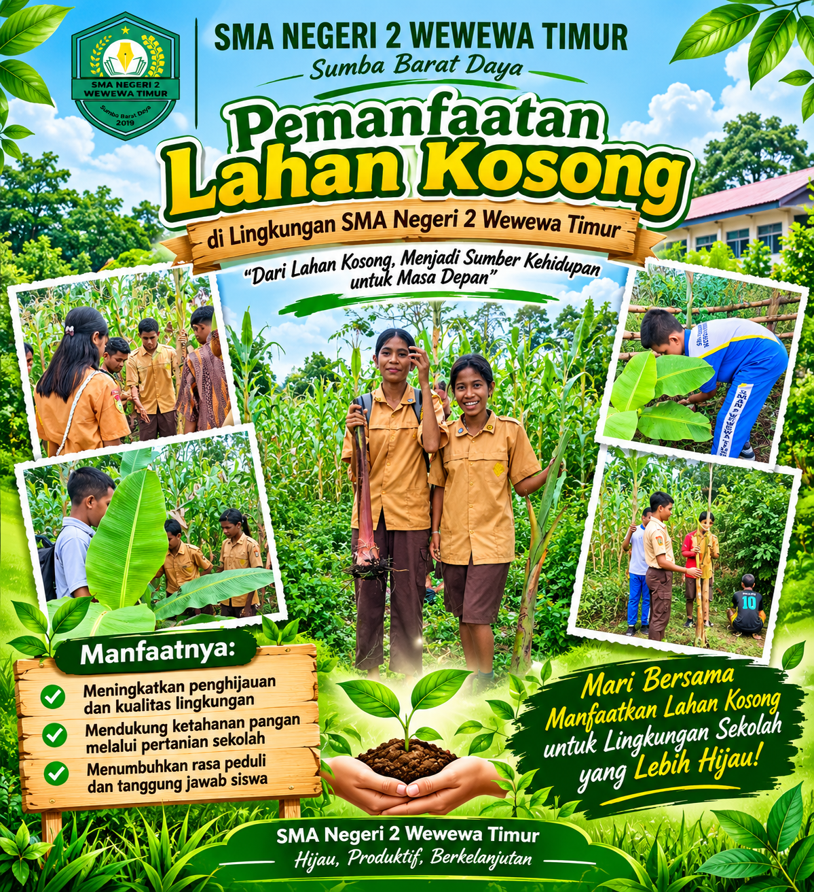

tentang program pemanfaatan Lahan
Pemanfaatan lahan kosong merupakan salah satu program unggulan SMA Negeri 2 Wewewa Timur yang bertujuan mengubah lahan sekolah yang belum terpakai menjadi area hijau yang produktif dan bermanfaat. Melalui program ini, sekolah menanamkan kepedulian peserta didik terhadap lingkungan sekaligus mengenalkan nilai penting bercocok tanam sebagai bagian dari kehidupan masyarakat Sumba Barat Daya yang akrab dengan pertanian.
Dalam pelaksanaannya, peserta didik terlibat langsung dalam seluruh tahapan penanaman. Mereka mengambil anakan pisang, membawanya ke lokasi tanam, menggali lubang, menanam bibit, hingga merawatnya. Kegiatan ini dilakukan secara gotong royong oleh siswa putra dan putri dengan didampingi guru pembina, sehingga menumbuhkan kerja sama, tanggung jawab, dan semangat kebersamaan. Pisang dipilih karena mudah tumbuh, tidak membutuhkan perawatan yang rumit, dan sesuai dengan kondisi tanah serta iklim setempat.
Program ini memberi manfaat yang beragam. Dari sisi lingkungan, lahan kosong menjadi lebih hijau, teduh, dan terawat. Dari sisi pendidikan, siswa belajar langsung tentang cara menanam, merawat tanaman, dan memanfaatkan potensi alam di sekitar mereka. Dari sisi ekonomi, tanaman pisang dapat menghasilkan buah yang kelak dimanfaatkan untuk kebutuhan sekolah, kegiatan siswa, atau dijual sebagai tambahan dana sekolah. Dengan demikian, program ini diharapkan membentuk generasi yang peduli lingkungan, mandiri, dan mampu melihat peluang dari lahan di sekitarnya.

Apa yang Dipelajari Pada Program Pemanfaatan Lahan?
Budidaya Tanaman Hortikultura
Peserta didik mempelajari teknik budidaya tanaman hortikultura, mulai dari pengolahan lahan, pemilihan bibit unggul, penanaman, pemeliharaan, hingga proses panen. Kegiatan ini memberikan pengalaman praktik dalam menghasilkan produk pertanian yang berkualitas.
Pengelolaan dan Perawatan Lahan
Peserta didik dibekali keterampilan dalam mengelola lahan secara berkelanjutan melalui kegiatan penyiraman, pemupukan, penyiangan gulma, pengendalian hama dan penyakit, serta penerapan praktik pertanian yang ramah lingkungan. Kegiatan ini menumbuhkan sikap disiplin, tanggung jawab, dan kepedulian terhadap lingkungan.
Panen dan Kewirausahaan Pertanian
Peserta didik belajar melakukan panen, sortasi hasil pertanian, pengemasan, hingga pengenalan dasar-dasar kewirausahaan melalui pemanfaatan hasil panen. Kegiatan ini bertujuan membangun jiwa mandiri, kreativitas, serta kemampuan melihat peluang ekonomi dari potensi pertanian yang dimiliki sekolah.
Fasilitas Program Pemanfaatan Lahan
-
🌱
Lahan Budidaya Tanaman
Area pertanian sekolah yang dimanfaatkan untuk budidaya sebagai media pembelajaran praktik bagi peserta didik.
-
💧
Sistem Irigasi dan Penyiraman
Fasilitas penyediaan air yang digunakan untuk mendukung proses penyiraman tanaman secara teratur.
-
🧰
Peralatan Pertanian
Berbagai peralatan pertanian yang digunakan peserta didik dalam kegiatan pengolahan lahan, penanaman, serta perawatan tanaman.
-
🍅
Area Panen dan Pengolahan Hasil
Tempat untuk melakukan proses panen, sortasi, penimbangan, dan penyimpanan sementara hasil pertanian.